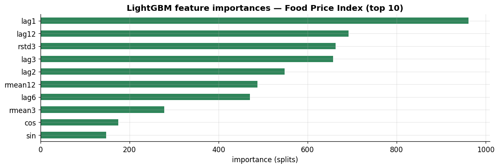
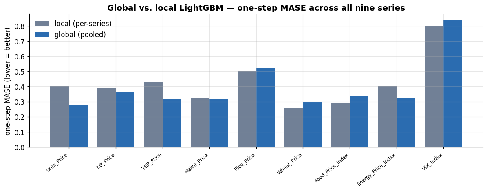

Series:Time Series Analysis in Python — from Statistical Modeling to Machine Learning
Part 7 turned a series into a feature matrix. Part 8 puts real learners on it — regularized linear models and, above all, gradient-boosted trees (XGBoost, LightGBM, CatBoost), the workhorses of applied forecasting. It also introduces the single most important idea for making machine learning pay off on time series: the global model — one model trained across many series at once. Every model here is scored with the backtesting discipline of Part 6.
What you will learn
Regularized linear models (Ridge, Lasso) on engineered features
Tree ensembles & gradient boosting — Random Forest, XGBoost, LightGBM, CatBoost
Direct vs. recursive multi-step in practice, via skforecast
Global (cross-series) vs. local (per-series) models — the ML-reduction payoff
Global-model tooling with mlforecast
A synthesis benchmark against the classical winners of Parts 3–5
Dataset
Still monthly_price.csv, but now we use all nine series — because global models need many series to shine. New libraries: lightgbm, xgboost, catboost, skforecast, mlforecast.
Naively, “use machine learning” means swapping ARIMA for a random forest. That rarely helps on its own — as Part 7 showed, on a single smooth series a forest mostly recovers persistence. Two ideas change the game:
Gradient boosting — an ensemble that fits trees sequentially, each new tree correcting the errors of the ones so far. It is the most consistently strong tabular learner, and forecasting-as-regression is a tabular problem.
Global models — instead of one model per series, train a single model across all series at once. It pools data, learns shared dynamics, and is the reason ML dominates large-scale forecasting (retail, energy, demand) where there are thousands of related series.
We build up to both, and keep Part 6’s backtesting as the scorekeeper.
2. Regularized linear models
Linear regression on lag features is an AR model; regularization makes it robust when features are many and correlated (lags always are).
Ridge (L2) shrinks coefficients smoothly — stable, keeps all features.
Lasso (L1) drives some coefficients to exactly zero — automatic feature selection, useful when you throw many candidate features at the model.
Scaling matters for penalized models, so we keep it inside a pipeline (Part 7).
Lasso prunes the redundant lags and keeps a sparse, interpretable subset — handy when the feature bank is large. Ridge retains everything but tames the correlated lags. Both are fast, strong baselines that a fancier model must beat.
3. Tree ensembles and gradient boosting
Trees capture nonlinearities and interactions that linear models can’t, and they need no scaling. Two ensembling philosophies:
Bagging (Random Forest) — many deep trees on bootstrap samples, averaged. Reduces variance; robust; hard to overfit.
Boosting — trees added sequentially, each fit to the residual errors of the current ensemble, with a learning rate controlling the step size. Reduces bias and usually wins on tabular data. The modern implementations differ in the details:
XGBoost — level-wise growth, heavy regularization, the original workhorse.
LightGBM — leaf-wise growth, histogram binning; very fast on large data.
CatBoost — ordered boosting and native categorical handling; strong defaults.
We compare all of them against the naive benchmark — using 6-fold walk-forward CV (Part 6), because a single split would mislead us.
The honest result echoes Part 7: on this single smooth monthly series, Ridge edges the naive benchmark and the boosted trees do not beat it — with only ~330 rows they add variance without finding extra signal. This is not a knock on boosting; it is the correct diagnosis that one low-frequency series is the wrong setting for it. (Note too: a single last-24-months split would have crowned LightGBM — walk-forward CV corrects that illusion, exactly as Part 6 warned.)
Boosting shines with more data and more signal. We create both next — first by going multi-step and recursive, then by going global.
# a quick look at what LightGBM leans onlgbm = LGBMRegressor(n_estimators=400, learning_rate=0.05, num_leaves=31, verbose=-1).fit(X, yt)imp = pd.Series(lgbm.feature_importances_, index=X.columns).sort_values(ascending=False)fig, ax = plt.subplots(figsize=(11, 3.8))imp.head(10).iloc[::-1].plot.barh(ax=ax, color=PALETTE[2])ax.set_title("LightGBM feature importances — Food Price Index (top 10)")ax.set_xlabel("importance (splits)")plt.tight_layout(); plt.show()

The extrapolation limit (worth repeating). Every tree-based model predicts an average of training targets in a leaf, so it can never output a value outside its training range. On a trending or shock-prone series that guarantees under-shooting new highs — which is why the 2020–21 surge defeats trees no matter how many features you add. Linear models and neural nets (Part 9) can extrapolate; trees cannot. Choose accordingly.
4. Multi-step forecasting with skforecast
Parts 6–7 built recursive/direct multi-step by hand. skforecast wraps any scikit-learn-style regressor into a forecaster that handles the lag creation and the recursive loop for you, and integrates backtesting.
skforecast also offers backtesting_forecaster (walk-forward CV in one call), direct multi-output forecasters, exogenous-variable support, and probabilistic intervals — the practical way to run everything from Parts 6–7 without hand-coding the loop.
5. Global vs. local models — the ML-reduction payoff
A local model is fit to one series. A global model is fit to all series at once: we stack every series’ feature rows into one training set, add a series identifier, and train a single learner. The bet is that the series share dynamics, so pooling gives the model far more data to learn from.
A practical wrinkle: our nine series live on wildly different scales (VIX ~20, TSP ~800). We standardize each series by its own training mean/std before pooling, so the model learns shape, not level. Because MASE is scale-invariant (numerator and denominator scale together), we can score directly on the standardized series and compare fairly across all nine.
def standardized_supervised(s): mu, sd = s.iloc[:-H].mean(), s.iloc[:-H].std() # train-only stats (leak-free) z = (s - mu) / sd X, yz = feature_matrix(z)return X, yzstore = {c: standardized_supervised(df[c]) for c in SERIES}# LOCAL: one LightGBM per serieslocal = {}for c in SERIES: X, yz = store[c]; tr = X.index < df.index[-H] m = LGBMRegressor(n_estimators=300, learning_rate=0.05, num_leaves=31, verbose=-1) m.fit(X[tr], yz[tr]) local[c] = mase(yz[~tr].values, m.predict(X[~tr]), yz[tr])# GLOBAL: one LightGBM across ALL series, with a series-id featureframes = []for i, c inenumerate(SERIES): X, yz = store[c]; Xg = X.copy(); Xg["series_id"] = i frames.append(pd.concat([Xg, yz.rename("y")], axis=1))allrows = pd.concat(frames); trm = allrows.index < df.index[-H]gmodel = LGBMRegressor(n_estimators=500, learning_rate=0.05, num_leaves=63, verbose=-1)gmodel.fit(allrows[trm].drop(columns="y"), allrows[trm]["y"])glob = {}for i, c inenumerate(SERIES): X, yz = store[c]; Xg = X.copy(); Xg["series_id"] = i te = X.index >= df.index[-H] glob[c] = mase(yz[te].values, gmodel.predict(Xg[te]), yz[~te])comp = pd.DataFrame({"local": local, "global": glob}).round(3)comp.loc["— MEAN —"] = comp.mean().round(3)comp
local
global
Urea_Price
0.401
0.280
MP_Price
0.388
0.366
TSP_Price
0.431
0.319
Maize_Price
0.324
0.315
Rice_Price
0.502
0.522
Wheat_Price
0.259
0.299
Food_Price_Index
0.290
0.340
Energy_Price_Index
0.403
0.322
VIX_Index
0.796
0.837
— MEAN —
0.422
0.400
plot_df = comp.drop("— MEAN —")fig, ax = plt.subplots(figsize=(11, 4.4))xpos = np.arange(len(plot_df)); w =0.4ax.bar(xpos - w/2, plot_df["local"], w, color=PALETTE[5], label="local (per-series)")ax.bar(xpos + w/2, plot_df["global"], w, color=PALETTE[0], label="global (pooled)")ax.set_xticks(xpos); ax.set_xticklabels(plot_df.index, rotation=40, ha="right", fontsize=8)ax.set_ylabel("one-step MASE (lower = better)")ax.set_title("Global vs. local LightGBM — one-step MASE across all nine series")ax.legend(frameon=False)plt.tight_layout(); plt.show()wins =int((plot_df["global"] < plot_df["local"]).sum())print(f"Global beats local on {wins} of {len(plot_df)} series; "f"mean MASE local={plot_df['local'].mean():.3f}, global={plot_df['global'].mean():.3f}")

Global beats local on 5 of 9 series; mean MASE local=0.422, global=0.400
A nuanced, honest result — and a genuinely useful one:
On average the global model wins, by a small margin, with a single model instead of nine.
It helps most on the related series — the fertilizers and energy, which we showed back in Part 5 are cointegrated and share dynamics — and hurts the more idiosyncratic ones (some crops, the VIX), where being forced to share one model is a handicap.
With only nine heterogeneous series the pooling benefit is modest. The decisive global-model wins arrive with hundreds or thousands of related series (retail SKUs, meters, sensors), where each series is short and pooling is transformative. That is the regime where the ML reduction dominates classical per-series modelling — and it’s why the industry’s large-scale forecasters are global.
6. Global models the easy way — mlforecast
Building the pooled matrix by hand is instructive; mlforecast (Nixtla) does it idiomatically from long-format data — lag/rolling features, per-series target scaling, and recursive multi-step for every series in a couple of calls.
from mlforecast import MLForecastfrom mlforecast.target_transforms import LocalStandardScalerlong= df.reset_index().melt(id_vars="ds", var_name="unique_id", value_name="y")train_long =long[long["ds"] < df.index[-H]]mlf = MLForecast( models=[LGBMRegressor(n_estimators=400, learning_rate=0.05, num_leaves=63, verbose=-1)], freq="MS", lags=[1, 2, 3, 12], target_transforms=[LocalStandardScaler()], # per-series scaling, handled for us)mlf.fit(train_long, id_col="unique_id", time_col="ds", target_col="y")fc = mlf.predict(h=H)mcol = [c for c in fc.columns if c notin ("unique_id", "ds")][0]print("one fitted global model, forecasts for all series:")fc.head(3)
one fitted global model, forecasts for all series:
unique_id
ds
LGBMRegressor
0
Energy_Price_Index
2019-09-01
70.766910
1
Energy_Price_Index
2019-10-01
69.610857
2
Energy_Price_Index
2019-11-01
72.475973
In three calls we fit one model across all nine series and produced 24-month recursive forecasts for each. That convenience — plus built-in backtesting, exogenous features, and probabilistic outputs — is why mlforecast/skforecast are the practical backbone of ML forecasting. (As Section 5’s caveat predicts, the recursive multi-step global forecast doesn’t dominate the classical models on these few heterogeneous macro series; the tooling is what scales to the many-series problems where it does.)
Finally, place the ML forecasters beside the classical winners of Parts 3–5 on the familiar hold-out. We compare the local recursive LightGBM and the global LightGBM against Drift, ETS, and ARIMA.
The local recursive LightGBM is genuinely competitive — it beats ETS and ARIMA on this hold-out and sits just behind the drift baseline, the best a model has managed across the whole series. The global model underperforms here, for the reasons Section 5 gave: recursive error-compounding over 24 steps, on a pool of only nine heterogeneous macro series, is the wrong regime for it. The lesson is not “global is worse” but “match the method to the data”: global + boosting is built for many related series, and on those it is state of the art.
8. Exercises
Tune the booster. Grid-search LightGBM’s num_leaves and learning_rate with skforecast’s backtesting. Can a tuned local model beat drift?
Direct vs recursive. Use skforecast’s direct multi-output forecaster and compare its 24-month RMSE to the recursive one from Section 4.
Exogenous boosting. Add lagged energy and VIX to the LightGBM feature set. Do the importances or the backtest change?
Global on returns. Rebuild the global model on log-returns instead of standardized levels. Does pooling help more when all series share a return scale?
More is better? Duplicate each series with small noise to simulate “many related series,” refit the global model, and watch whether its edge over local grows.
Direct multi-output LightGBM RMSE: 17.01
Recursive LightGBM RMSE: 20.90
9. Key takeaways
Regularized linear models (Ridge, Lasso) are strong, fast baselines on lag features; Lasso doubles as feature selection.
Gradient-boosted trees (XGBoost, LightGBM, CatBoost) are the tabular workhorses, but on a single short series they mostly recover persistence — and, being tree-based, cannot extrapolate beyond the training range.
skforecast and mlforecast wrap any regressor with lag creation, recursive/direct multi-step, backtesting, and exogenous support — use them instead of hand-coding.
Global models — one learner across many series — are the reduction’s real payoff. Here they win narrowly on average and clearly on the related series, but the decisive gains need many related series, not nine heterogeneous ones.
Match method to data: a local recursive LightGBM beat ETS/ARIMA on our hold-out; global + boosting is built for large panels of related series.
What’s next — Part 9: Deep Learning for Sequences
Trees can’t extrapolate and don’t model sequences natively. Part 9 turns to neural networks built for sequences — windowing for supervised deep learning, MLPs, 1D CNNs / TCNs, and the recurrent family (RNN, LSTM, GRU) — the architectures that can, in principle, learn trends and long-range structure a tree never will.